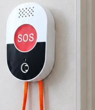

WW-28 系列 SOS 报警终端
一键求助，快速响应，安全守护。支持 4G / LoRa / LoRaWAN 多种通信方式，安装简便，牢固耐用，适用多场景。
万维物联网（南京）有限公司 南京市浦口高新区星火路 20 号 | x@wwiot.com | 136 7512 0926
1产品概述
WW-28 系列 SOS 报警终端是一款面向紧急求助场景的无线报警设备，支持 4G / LoRa / LoRaWAN 多种通信方式。设备具备 SOS 按键报警与 SOS 拉绳报警双重触发方式，并内置高精度温湿度传感器，可实时采集环境温湿度并上传平台。低功耗转换设计、长效续航，安装简便、牢固耐用，广泛适用于医院、养老机构、无障碍场所等需要快速求助响应的场景。
2产品型号
| 订货型号 | 通信方式 | 说明 |
|---|---|---|
| WW-28C | 4G 全网通 | 4G 全网通，远程实时报警，适用多地区部署 |
| WW-28L | 国内 LoRa | 国内 LoRa 低功耗，适合私有化部署，传输稳定覆盖广 |
| WW-28H | LoRaWAN | 国外 LoRaWAN 产品，支持 LoRaWAN 标准，低功耗长距离传输，适用于海外市场 |
WW-28L 使用国内 433~510 MHz 频段，适合搭配万维 LoRa 网关私有化部署；WW-28H 面向海外 LoRaWAN 网络（EU868 / US915 / AU915 等频段可选）。
3核心功能
3.1 SOS 按键报警
一键紧急呼叫，快速上传报警信息，守护生命安全。按键触发后设备立即上报 SOS 报警事件至网关/平台，平台可通过电话、短信、微信等方式推送预警通知。
3.2 SOS 拉绳报警
独特手拉绳设计，适合紧急情况下使用（如卫生间、病床旁拉绳求助），与按键双重保障，更安全。
3.3 温湿度数据采集
内置高精度温湿度传感器，实时采集环境温度与湿度，支持平台远程查看，便于环境监管。
4电池方案与产品尺寸
4.1 电池方案（二选一）
| 方案 | 特点 |
|---|---|
| 可充电电池包（Type-C 充电） | Type-C 充电接口，采用可循环利用设计，适合长期部署 |
| 一次性锂电池 | 高能量密度，超长待机时间，无需充电、维护简单 |
4.2 产品尺寸

产品尺寸：84 × 51 × 21 mm（长 × 宽 × 厚）。
5产品规格
| 参数 | 参数值 |
|---|---|
| 产品型号 | WW-28C / WW-28L / WW-28H |
| 通信方式 | 4G 全网通（28C） / LoRa（28L） / LoRaWAN（28H） |
| 报警方式 | SOS 按键报警、SOS 拉绳报警 |
| 环境采集 | 内置温湿度传感器（温度、湿度） |
| 供电方案 | 可充电电池包（Type-C 充电）或一次性锂电池 |
| 产品尺寸 | 84 × 51 × 21 mm |
| 安装方式 | 壁挂安装，安装简便、牢固耐用 |
| 应用场景 | 医院卫生间、养老居室、无障碍场所等 |
具体通信字段、接口电气参数和项目配置请以对应型号的交付资料为准。
6应用场景
主要应用场景：
| 场景 | 说明 |
|---|---|
| 医院卫生间 | 紧急求助、快速响应 |
| 养老居室 | 贴心守护，老人更安心 |
| 养老院 | 提高安全管理效率 |
| 无障碍场所 | 为特殊人群提供安全保障 |